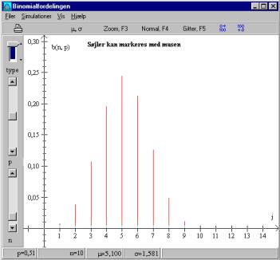
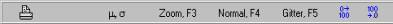
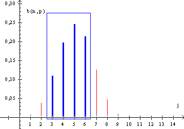
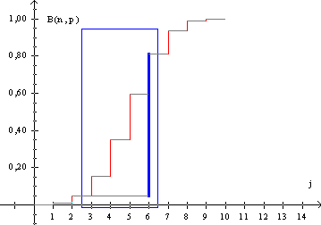
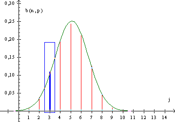
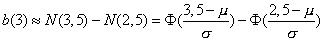

Simulationen kan både benyttes til at bibringe eleverne en forståelse af binomialfordelingen og til at regne de fleste opgaver i binomialfordelingen. Brugen af simulationen svarer til brugen af en tabel.

I panelet til venstre kan man ændre parametre. Øverst skiftes mellem ikke kumuleret og kumuleret fordeling. På scrollbaren i midten ændres basissandsynlighed fra 0.01 til 0.99 i trin på 0,01og på nederste scrollbar ændres antalsparameteren n fra 2 til 100. Ændringerne ses øjeblikkeligt på grafen. Samtidigt kan man i hovedmenuen vælge Vis | Tabel.
Tabellen indeholder både binomialsandsynlighederne og de kumulerede binomialsandsynligheder. Tabellen opdateres automatisk, når parametrene p og n ændres.
| i | b | B |
| 0 | 0,001 | 0,001 |
| 1 | 0,008 | 0,009 |
| 2 | 0,039 | 0,048 |
| 3 | 0,108 | 0,156 |
| 4 | 0,197 | 0,353 |
| 5 | 0,246 | 0,598 |
| 6 | 0,213 | 0,811 |
| 7 | 0,127 | 0,938 |
| 8 | 0,049 | 0,987 |
| 9 | 0,011 | 0,999 |
| 10 | 0,001 | 1 |
I panelet foroven kan man vælge forskellige visninger:

Indtegn middelværdi og spredning, zoom ind, indtegn normalfordeling med samme middelværdi og spredning, indtegn gitter, forøg antal decimaler og formindsk antal decimaler.
Markeres et område med musen, beregnes sandsynligheden for dette område:

Resultatet skrives i statuslinien. I dette tilfælde fås: P[3;6] = 0,763. Ændres n og p beregnes automatisk nye værdier for P[3;6]. Bemærk, at markeringen er justeret, så rektanglet går fra 2½ til 6½. Man kan også markere et område så sandsynligheden for højst j succeser eller mindst j succeser beregnes.

Ved visning af kumulerede binomialsandsynligheder indtegnes en blå streg, som markerer forskellen på P(x £ j) og P(x £ i-1).
Vælges normalfordeling, indtegnes normalfordelingen med samme middelværdi og spredning. Markeres en enkelt søjle, går markeringen fra j-½ til j+½.

Det set, at 
Lommeregneres aktiveres ved at vælge Vis »Regner«. Datafelterne i lommeregneren opdateres automatisk, men felterne kan også udfyldes manuelt. Dette muliggør beregning af kumulerede binomialsandsynligheder for vilkårlige værdier af p, n og j, hvor 1 £ n £ 1000 og 0 £ j £ 1000.